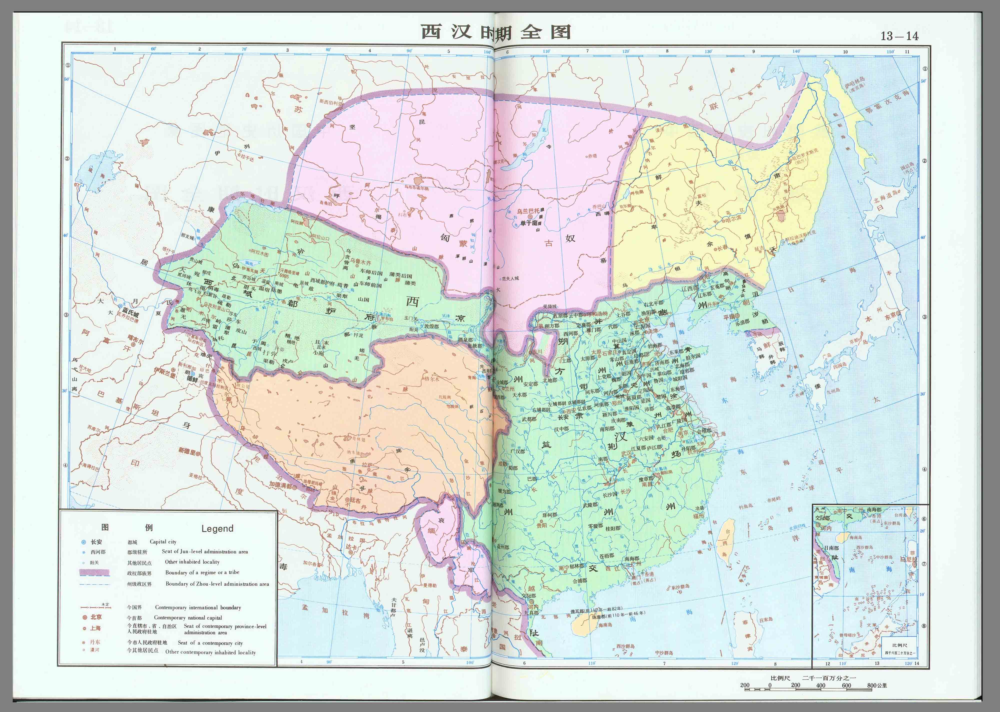

政权综述 · 中文 / English 独立切换 中文 English
摘要
本文件以西汉为period_id，兼述新莽与东汉：西汉前202—8年，新莽8—23年，东汉25—220年。新莽东汉另见对应period条目。
原文摘录
原文略，见来源定位。不伪造长段古文。
白话解释
以下为现代转述，非原文：汉承秦制而休养生息，武帝拓边开西域；王莽改制失败；光武复汉后东汉延续，终因外戚宦官黄巾而衰。
关键人物
刘邦（约前256—前195，存疑）、汉武帝刘彻（约前156—前87，存疑）、王莽（约前45—23，存疑）、刘秀（约前5—57，存疑）。
关键事件
楚汉战争、文景之治、汉武开边、丝路开通、王莽改制、光武中兴、黄巾起义。
制度与地理
疆域文字示意（非精确）：西汉盛时东至辽东朝鲜四郡，西至西域都护，南至交趾，北至漠北；东汉大体收缩。制度：郡国并行、察举征辟、刺史监察、三公九卿演变。
争议与不同记载
西汉帝数含少帝争议；更始帝是否列正统存疑；王莽评价两极；丝路开通年代有多说，标争议。
来源与版本
《史记》《汉书》《后汉书》传世本，具体版本待考。页码待核，未能联网核验。
关联条目
han/emperors.yaml，han/timeline.yaml；新莽（period xin）、东汉（period han-eastern）条目另见。
graph TD
GAO["汉高祖刘邦"] --> WJ["文景"]
WJ --> WU["汉武帝"]
WU --> ZX["昭宣中兴"]
ZX --> M["王莽（新莽）"]
M --> GW["光武帝刘秀"]
GW --> MZ["明章之治"]
MZ --> L["东汉后期"]
<!-- manifest: {period_id:"han-western", covers:["han-western","xin","han-eastern"], files:["han/dynasty.md","han/emperors.yaml","han/power-holders.yaml","han/timeline.yaml","han/official/han-official-gaozu-001.md","han/official/han-official-wenjing-002.md","han/official/han-official-wudi-003.md","han/official/han-official-guangwu-004.md","han/folk/han-folk-zhaojun-001.md","han/folk/han-folk-zhangqian-002.md"]} -->
Han, Xin, and Eastern Han Overview (202 BCE–220 CE)
This survey covers the Western Han (202 BCE–8 CE), the Xin interregnum (8–23 CE), and the Eastern Han (25–220 CE). Liu Bang 刘邦 (circa 256–195 BCE, disputed) founded the Han after the Chu-Han wars, retaining Qin institutions while lightening burdens, a policy continued under the Wen-Jing 文景 reigns.
Emperor Wu of Han 汉武帝刘彻 (circa 156–87 BCE, disputed) expanded into the steppe and the Western Regions, opened routes later called the Silk Road, and promoted Confucian officials alongside fiscal monopolies. Wang Mang 王莽 (circa 45 BCE–23 CE, disputed) founded the Xin and attempted sweeping reforms, which failed amid crisis. Liu Xiu 刘秀 (circa 5 BCE–57 CE, disputed), Emperor Guangwu, restored the dynasty at Luoyang, opening the Eastern Han and the Ming-Zhang 明章 consolidation.
The Han combined commanderies and enfeoffed kingdoms, used recommendation (cha ju 察举) recruitment, and supervised provinces through inspectors. At its height it reached Liaodong and the Four Commanderies, the Western Regions protectorate, Jiaozhi in the south, and the steppe frontier; the Eastern Han held a broadly smaller area.
Inclusion of the child emperors, the status of Gengshi, judgments on Wang Mang, and Silk Road dates are disputed.
Sources pending page verification, no internet verification.
皇帝传承思维导图 mindmap
root((汉朝（西汉·新莽·东汉）·君主世系))
西汉15位
汉高祖刘邦
前202—前195
惠帝刘盈
前195—前188
少帝刘恭（非正统，存疑）
前188—前184
少帝刘弘（非正统，存疑）
前184—前180
文帝刘恒
前180—前157
景帝刘启
前157—前141
武帝刘彻
前141—前87
昭帝刘弗陵
前87—前74
废帝刘贺（在位短，存疑）
前74年27日
宣帝刘询
前74—前49
元帝刘奭
前49—前33
成帝刘骜
前33—前7
哀帝刘欣
前7—前1
平帝刘衎
前1—5
孺子婴刘婴（非正统，存疑）
6—8
新朝2位
王莽（新朝）
8—23
更始帝刘玄（非正统，存疑）
23—25
东汉14位
光武帝刘秀
25—57
明帝刘庄
57—75
章帝刘炟
75—88
和帝刘肇
88—105
殇帝刘隆
105—106
安帝刘祜
106—125
少帝刘懿（存疑）
125年短暂
顺帝刘保
125—144
冲帝刘炳
144—145
质帝刘缵
145—146
桓帝刘志
146—168
灵帝刘宏
168—189
少帝刘辩（存疑）
189
献帝刘协
189—220
帝系表明细(emperors.yaml) period_id: han-western
covers: [han-western, xin, han-eastern]
note: 生卒年在位皆据传世本整理，约数或存疑；页码待核，未能联网核验
western_han:
- {name: 汉高祖刘邦, reign: 前202—前195, note: 开国}
- {name: 惠帝刘盈, reign: 前195—前188}
- {name: 少帝刘恭（非正统，存疑）, reign: 前188—前184, note: 吕后时期，是否列帝争议}
- {name: 少帝刘弘（非正统，存疑）, reign: 前184—前180}
- {name: 文帝刘恒, reign: 前180—前157}
- {name: 景帝刘启, reign: 前157—前141}
- {name: 武帝刘彻, reign: 前141—前87}
- {name: 昭帝刘弗陵, reign: 前87—前74}
- {name: 废帝刘贺（在位短，存疑）, reign: 前74年27日}
- {name: 宣帝刘询, reign: 前74—前49}
- {name: 元帝刘奭, reign: 前49—前33}
- {name: 成帝刘骜, reign: 前33—前7}
- {name: 哀帝刘欣, reign: 前7—前1}
- {name: 平帝刘衎, reign: 前1—5}
- {name: 孺子婴刘婴（非正统，存疑）, reign: 6—8}
xin:
- {name: 王莽（新朝）, reign: 8—23, note: period xin，改制失败}
- {name: 更始帝刘玄（非正统，存疑）, reign: 23—25}
eastern_han:
- {name: 光武帝刘秀, reign: 25—57}
- {name: 明帝刘庄, reign: 57—75}
- {name: 章帝刘炟, reign: 75—88}
- {name: 和帝刘肇, reign: 88—105}
- {name: 殇帝刘隆, reign: 105—106}
- {name: 安帝刘祜, reign: 106—125}
- {name: 少帝刘懿（存疑）, reign: 125年短暂}
- {name: 顺帝刘保, reign: 125—144}
- {name: 冲帝刘炳, reign: 144—145}
- {name: 质帝刘缵, reign: 145—146}
- {name: 桓帝刘志, reign: 146—168}
- {name: 灵帝刘宏, reign: 168—189}
- {name: 少帝刘辩（存疑）, reign: 189}
- {name: 献帝刘协, reign: 189—220}
实际掌权人思维导图 mindmap
root((汉朝（西汉·新莽·东汉）·名义君主与实际掌权))
惠帝／少帝
吕后吕雉（约前241—前180，存疑）
皇太后临朝
昭帝／宣帝
霍光（约前130—前68，存疑）
大司马大将军辅政
平帝／孺子婴转自立
王莽（约前45—23，存疑）
安汉公转摄政转新帝
和帝（早年）
窦宪（卒92，存疑）
外戚大将军
冲帝／质帝／桓帝早年
梁冀（卒159，存疑）
外戚大将军
桓帝／灵帝
宦官集团（以十常侍为代表，人物生卒存疑）
中常侍等内朝
掌权表明细(power-holders.yaml) period_id: han-western
covers: [han-western, xin, han-eastern]
entries:
- holder: 吕后吕雉（约前241—前180，存疑）
nominal_lord: 惠帝／少帝
role: 皇太后临朝
start_year: -195
end_year: -180
basis: 惠帝年幼，吕后称制
event: 诛韩信彭越，分封吕氏
source: 史记·吕太后本纪；汉书，页码待核
dispute: 少帝废杀细节争议
- holder: 霍光（约前130—前68，存疑）
nominal_lord: 昭帝／宣帝
role: 大司马大将军辅政
start_year: -87
end_year: -68
basis: 武帝托孤辅政
event: 废刘贺，立宣帝
source: 汉书·霍光传，页码待核
dispute: 废立合法性评价分歧
- holder: 王莽（约前45—23，存疑）
nominal_lord: 平帝／孺子婴转自立
role: 安汉公转摄政转新帝
start_year: -1
end_year: 23
basis: 外戚辅政篡代
event: 王莽改制、新亡
source: 汉书·王莽传，页码待核
dispute: 改制动机评价两极，标争议
- holder: 窦宪（卒92，存疑）
nominal_lord: 和帝（早年）
role: 外戚大将军
start_year: 89
end_year: 92
basis: 外戚专权、北击匈奴
event: 窦宪之变被诛
source: 后汉书·窦宪传，页码待核
dispute: 功罪评价分歧
- holder: 梁冀（卒159，存疑）
nominal_lord: 冲帝／质帝／桓帝早年
role: 外戚大将军
start_year: 144
end_year: 159
basis: 连续立幼主专权
event: 毒杀质帝，后被桓帝诛灭
source: 后汉书·梁冀传，页码待核
dispute: 跋扈细节多出追述，存疑
- holder: 宦官集团（以十常侍为代表，人物生卒存疑）
nominal_lord: 桓帝／灵帝
role: 中常侍等内朝
start_year: 159
end_year: 189
basis: 党锢之祸、黄巾前后专权
event: 何进谋诛宦官反被杀
source: 后汉书·宦者列传，页码待核
dispute: 十常侍人数与事迹多后世演绎，标存疑
独立时间线思维导图(本朝代隔离展示) mindmap
root((汉朝（西汉·新莽·东汉）·大事分期))
han-western
盐铁均输等财政改革
前119年盐铁官营雏形
丝路开通之始（年代多说）
前138年前后张骞通西域
推恩令察举，北击匈奴
前141—前87年汉武制度开边
休养生息，约，存疑分期
前180—前141年文景之治
刘邦胜项羽建汉
前206—前202年楚汉战争
东汉
宦官外戚士人冲突
166—169年党锢之祸
张角太平道起义
184年黄巾起义
董卓之乱至禅让，约，存疑
189—220年东汉倾覆
刘秀称帝建东汉
25年光武中兴
班超经营西域，窦宪北伐，约，存疑
73—89年东汉经营西域北疆
新朝
新莽改制与失败
8—23年王莽改制
农民起义覆新
17—23年绿林赤眉起义
时间线明细(timeline.yaml) period_id: han-western
covers: [han-western, xin, han-eastern]
events:
- {year_label: 前206—前202年楚汉战争, year: -202, period_id: han-western, title: 刘邦胜项羽建汉, confidence: high, source: 史记·高祖本纪，页码待核}
- {year_label: 前180—前141年文景之治, year: -180, period_id: han-western, title: 休养生息，约，存疑分期, confidence: medium, source: 汉书·文景纪，页码待核}
- {year_label: 前141—前87年汉武制度开边, year: -141, period_id: han-western, title: 推恩令察举，北击匈奴, confidence: high, source: 汉书·武帝纪，页码待核}
- {year_label: 前138年前后张骞通西域, year: -138, period_id: han-western, title: 丝路开通之始（年代多说）, confidence: disputed, source: 史记·大宛列传，页码待核}
- {year_label: 前119年盐铁官营雏形, year: -119, period_id: han-western, title: 盐铁均输等财政改革, confidence: medium, source: 汉书·食货志，页码待核}
- {year_label: 8—23年王莽改制, year: 8, period_id: xin, title: 新莽改制与失败, confidence: high, source: 汉书·王莽传，页码待核}
- {year_label: 17—23年绿林赤眉起义, year: 17, period_id: xin, title: 农民起义覆新, confidence: high, source: 汉书／后汉书，页码待核}
- {year_label: 25年光武中兴, year: 25, period_id: han-eastern, title: 刘秀称帝建东汉, confidence: high, source: 后汉书·光武帝纪，页码待核}
- {year_label: 73—89年东汉经营西域北疆, year: 73, period_id: han-eastern, title: 班超经营西域，窦宪北伐，约，存疑, confidence: medium, source: 后汉书，页码待核}
- {year_label: 166—169年党锢之祸, year: 166, period_id: han-eastern, title: 宦官外戚士人冲突, confidence: high, source: 后汉书·党锢列传，页码待核}
- {year_label: 184年黄巾起义, year: 184, period_id: han-eastern, title: 张角太平道起义, confidence: high, source: 后汉书，页码待核}
- {year_label: 189—220年东汉倾覆, year: 189, period_id: han-eastern, title: 董卓之乱至禅让，约，存疑, confidence: medium, source: 后汉书／三国志，页码待核}
疆域图(真实地图图片) han-donghan-quantu.jpg 
han-xihan-quantu.jpg 疆域图来源与许可(meta.yaml) period_id: han
covers: [han-western, xin, han-eastern]
map: maps/territory.svg
legacy_map: maps/han-sketch.svg
year_label: 西汉盛期—东汉（两汉疆域合示意）
polity: 两汉（含新莽分期见timeline）
method: 自绘示意（SVG手写多边形），海洋/陆地底色＋黄河长江曲线＋疆域填充＋邻族方位＋长安洛阳＋西域都护方向虚线＋指南针＋比例尺示意不按比例＋图例，仅方位示意，不作精确测绘
license: CC0（自绘示意）
dispute: 西汉/新莽/东汉三段疆域进退不一，史料���字分歧；西域都��虚线仅表联系方向非实控线；本图不套用现代行政边界，不声称精确
compat: maps/han-sketch.svg 与 maps/territory.svg 内容一致，保留旧文件名兼容
source_note: 未能联网核验，页码待核
note: 需与han/dynasty.md疆域文字描述配合使用
real_maps:
- file: maps/han-donghan-quantu.jpg
origin: 用户本地地图包 E:/000开发/history/中国历代地图（zip内全图/分省图扫描页）
license: 未声明（用户自备，仅本��展示，勿再分发；待补制图者/原书信息）
- file: maps/han-xihan-quantu.jpg
origin: 用户本地地图包 E:/000开发/history/中国历代地图（zip内全图/分省图扫描页）
license: 未声明（用户自备，仅本��展示，勿再分发；待补制图者/原书信息）
note_real: 本组疆域图已替换为真实地图图片（jpg），页面优先展示real_maps；territory.svg仅保留兼容/五代等缺包组使用
史料条目(官 4 / 民 2) 全局时间线(分组聚合) · 首页 · 搜索
历史全集静态站 · 零依赖构建 · 史料均注来源版本定位，未核验处标“页码待核/未能联网核验”；演绎与史料严格区分；疆域图为自绘示意非精确测绘，禁套现代边界；官方图待用户提供后替换。